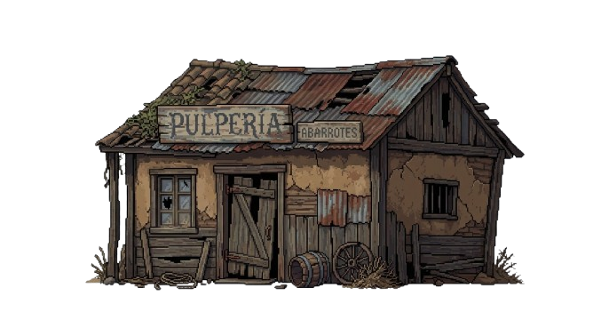

La huida quedó detenida. Ajustá las opciones o retomá el camino.
Sarmiento no consiguió atravesar la llanura esta vez. Usá las piedritas, los saltos y las montañas de arena para abrirte paso.
Con los perseguidores atrás, Sarmiento puede prepararse para la travesía por la cordillera.
Los federales siguen tus pasos. Cruzá la llanura, aprovechá los médanos y defendete con piedritas.
LA LLANURA PAMPEANA